Git config¶
Configure Git¶
User Name : Your name will be attached to your commits. Set it with:
git config --global user.name "Your Name"
Email Address : Your email is also attached to your commits. Set it with:
git config --global user.email "Your Email Address"
Set the default branch name for new repositories (for example, main instead of master):
git config --global init.defaultBranch main
more examples
# Global Ignore File
# Create a global ignore file with:
touch .gitignore
git config --global core.excludesfile ~/.gitignore
# Global Editor
# Set your default editor with:
git config --global core.editor nano
# Open the global config file where you can change configuration manually
git config --global --edit
Viewing Your Configuration¶
You can see all your Git settings with:
git config --list
# user.name=Your Name
# user.email=you@example.com
# core.editor=code --wait
# alias.st=status
# init.defaultbranch=main
# Shows all Git settings along with the file they come from
git config -l --show-origin
To view a specific value, use:
git config user.name
# Your Name
Changing or Unsetting Config Values¶
- To change a value, just run the
git configcommand again with the new value. - To remove a setting, use --unset:
git config --global --unset code.editor
Configuration Levels¶
There are three levels of configuration:
- System (all users):
git config --system - Global (current user):
git config --global - Local (current repo):
git config --local
# Example: Set a Local Config
# Local settings only apply to the current repository
git config user.name "Project Name"
# Example: Set a Global Config
# Global settings apply to all repositories for the current user.
git config --global user.name "Global Name"
# Example: Set a System Config
# System settings apply to all repositories for all users.
git config --system user.name "System Name"
What is a Repository?¶
- A Git repository is a folder that Git tracks for changes.
- The repository stores all your project's history and versions.
# mkdir creates a new directory.
# cd changes our working directory.
mkdir myproject
cd myproject
# Now that we are in the correct folder, we can initialize Git on that folder:
git init
# Initialized empty Git repository in /Users/user/myproject/.git/
- Git creates a hidden folder called .git inside your project.
- This is where Git stores all the information it needs to track your files and history.
What is an Untracked File?¶
- An untracked file is any file in your project folder that Git is not yet tracking.
- These are files you've created or copied into the project folder, but haven't told Git to watch.
- To make a file tracked, you need to add it to the staging area.
# Check if Git is tracking your new file:
git status
# On branch master
# No commits yet
# Untracked files:
# (use "git add ..." to include in what will be committed)
# index.html
# nothing added to commit but untracked files present (use "git add" to track)
- Git sees index.html, but it is untracked (not yet added to the repository)
What is the Staging Environment?¶
- The staging environment (staging area or the Index) is like a waiting room for your changes.
- You use it to tell Git exactly which files you want to include in your next commit.
git add <file> # -> Stage a file
git add --all # -> Stage all changes or "git add -A"
git status # -> See what is staged
git restore --staged <file> # -> Unstage a file
Git Commit¶
- A commit is like a save point in your project.
- It records a snapshot of your files at a certain time, with a message describing what changed.
- You can always go back to a previous commit if you need to.
How to Commit with a Message (-m)¶
To save your staged changes, use git commit -m "your message":
git commit -m "First release of Hello World!"
# [master (root-commit) 221ec6e] First release of Hello World!
# 3 files changed, 26 insertions(+)
# create mode 100644 README.md
# create mode 100644 bluestyle.css
# create mode 100644 index.html
Commit All Changes Without Staging (-a)¶
- You can skip the staging step for already tracked files with git commit -a -m "message".
- This commits all modified and deleted files, but not new/untracked files.
git commit -a -m "Quick update to README"
# [master 123abcd] Quick update to README
# 1 file changed, 2 insertions(+)
Write Multi-line Commit Messages¶
- If you just type git commit (no -m), your default editor will open so you can write a detailed, multi-line message:
git commit
Other Useful Commit Options¶
- Create an empty commit:
git commit --allow-empty -m "Start project"
- Use previous commit message (no editor):
git commit --no-edit
- Quickly add staged changes to last commit, keep message:
git commit --amend --no-edit
- Forgot to stage a file?
- If you run
git commit -m "message"but forgot togit adda file, just add it and commit again. Or usegit commit --amendto add it to your last commit.
- If you run
git add forgotten.txt
git commit --amend
- Remove Files from Last Commit
git reset HEAD^ -- unwanted.txt
git commit --amend
View Commit History (git log)¶
- To view the history of commits for a repository, you can use the git log command:
git log
# commit 09f4acd3f8836b7f6fc44ad9e012f82faf861803 (HEAD -> master)
# Author: w3schools-test
# Date: Fri Mar 26 09:35:54 2021 +0100
# Updated index.html with a new line
# commit 221ec6e10aeedbfd02b85264087cd9adc18e4b26
# Author: w3schools-test
# Date: Fri Mar 26 09:13:07 2021 +0100
# First release of Hello World!
# To display commits after sha1 to sha2 (included)
git log sha1..sha2
- For a shorter view, use git log --oneline:
git log --oneline
# 09f4acd Updated index.html with a new line
# 221ec6e First release of Hello World!
# -> you can display specified number of commit
git log --oneline -4
- To see which files changed in each commit, use
git log --stat:
git log --stat
Git Tag¶
- A tag in Git is like a label or bookmark for a specific commit.
- Tags are most often used to mark important points in your project history, like releases (v1.0 or v2.0).
Lightweight Tag¶
- Just a simple name for a commit (no extra info, like a bookmark).
git tag <tagname> # -> Create a lightweight tag, example : git tag v1.0
Annotated Tag¶
- Stores author, date, and message.
- Recommended for releases and sharing with others.
git tag -a <tagname> -m "message" #-> Create an annotated tag,
# example : git tag -a v1.0 -m "Version 1.0 release"
Tag a Specific Commit¶
- You can tag an older commit by specifying its hash :
git tag v1.1 1a2b3c4d
List Tags¶
- List Tags in your repository:
git tag
Show Tag Details (git show)¶
- See details about a tag and the commit it points to :
git show v1.0
Push Tags to Remote¶
- To push a single tag to your remote repository :
git push origin v1.0
- To push all your local tags to the remote at once :
git push --tags
Delete Tags¶
- Delete a tag locally :
git tag -d v1.0
- Delete a tag from the remote repository :
git push origin --delete tag v1.0
Update or Replace a Tag (Force Push)¶
- If you need to move a tag to a different commit and update the remote :
git tag -f v1.0 <new-commit-hash>
git push --force origin v1.0
Git Stash¶
Sometimes you need to quickly switch tasks or fix a bug, but you're not ready to commit your work. "git stash" lets you save your uncommitted changes and return to a clean working directory. You can come back and restore your changes later.
Here are some common use cases:
- Switch branches safely: Save your work before changing branches.
- Handle emergencies: Stash your work to fix something urgent, then restore it.
- Keep your work-in-progress safe: Avoid messy commits or losing changes.
Stash Your Changes (git stash)¶
Save your current changes :
- Tracked files (both staged and unstaged) are stashed by default.
- Untracked files (new files not yet added to Git) are not stashed by default.
- To stash untracked files too, use "git stash -u" (or --include-untracked).
git stash
# Saved working directory and index state WIP on main: 1234567 Add new feature
- Your changes are now saved in a stack.
- What is a stash stack?
- Each time you run git stash, your changes are saved on top of a "stack".
- The most recent stash is on top, and you can apply or drop stashes from the top down, or pick a specific one from the list.
Stash with a Message (git stash push -m)¶
- Add a message to remember what you stashed:
git stash push -m "WIP: homepage redesign"
# Saved working directory and index state On main: WIP: homepage redesign
List All Stashes (git stash list)¶
- List All Stashes saved :
git stash list
# stash@{0}: On main: WIP: homepage redesign
# stash@{1}: WIP on main: 1234567 Add new feature
Show Stash Details¶
- This command gives a summary of what files and changes are in your most recent stash.
git stash show
# src/index.html | 2 +-
# 1 file changed, 1 insertion(+), 1 deletion(-)
- This command shows the exact lines that were changed in your most recent stash.
git stash show -p
# diff --git a/src/index.html b/src/index.html
# index 1234567..89abcde 100644
# --- a/src/index.html
# +++ b/src/index.html
# @@ ...
Apply the Latest Stash git stash apply¶
- This command restores your most recent stashed changes, but keeps the stash in the list so you can use it again if needed.
git stash apply
# On branch main
# Changes not staged for commit:
# (use "git add ..." to update what will be committed)
# (use "git restore ..." to discard changes in working directory)
# modified: src/index.html
Apply a Specific Stash git stash apply stash@{n}¶
- restore a specific stash from the list.
git stash apply stash@{1}
# On branch main
# Changes not staged for commit:
# modified: src/index.html
Pop the Stash git stash pop¶
- Apply the latest stash and remove it from the stack.
git stash pop
# On branch main
# Changes not staged for commit:
# modified: src/index.html
# Dropped refs/stash@{0} (abc1234d5678)
Drop a Stash git stash drop¶
- Delete a specific stash when you no longer need it.
git stash drop stash@{0}
# Dropped stash@{0} (abc1234d5678)
Clear All Stashes git stash clear¶
- Delete all your stashes at once.
git stash clear
Branch from a Stash git stash branch¶
- Create a new branch and apply a stash to it.
- Useful if your stashed work should become its own feature branch
git stash branch new-feature stash@{0}
# Switched to a new branch 'new-feature'
# On branch new-feature
# Changes not staged for commit:
# modified: src/index.html
# Dropped stash@{0} (abc1234d5678)
Note: Stashes are useful for temporary work, but are not a replacement for commits!
Git History¶
- Git keeps a detailed record of every change made to your project.
- You can use history commands to see what changed, when, and who made the change.
See Commit History (git log)¶
- This command shows all commits, including author, date, and message.
- Use the arrow keys to scroll
- press q to quit.
- you can search for a word by typing "/" followed by your search term, then press "n" to jump to the next match.
git log
# commit 09f4acd3f8836b7f6fc44ad9e012f82faf861803 (HEAD -> master)
# Author: w3schools-test
# Date: Fri Mar 26 09:35:54 2021 +0100
# Updated index.html with a new line
Show Commit Details (git show )
- This command shows everything about a specific commit:
- who made it, when, the message, and the exact changes.
git show 09f4acd
# commit 09f4acd3f8836b7f6fc44ad9e012f82faf861803 (HEAD -> master)
# Author: w3schools-test
# Date: Fri Mar 26 09:35:54 2021 +0100
# Updated index.html with a new line
# diff --git a/index.html b/index.html
# index 1234567..89abcde 100644
# --- a/index.html
# +++ b/index.html
# @@ ...
# +New Title
Compare Changes (git diff)¶
- See what is different between your working directory (unstaged changes) and the last commit.
git diff
# diff --git a/index.html b/index.html
# index 1234567..89abcde 100644
# --- a/index.html
# +++ b/index.html
# @@ ...
# -Old Title
# +New Title
Compare Staged Changes (git diff --staged)¶
- See what is different between your staged files and the last commit.
git diff --staged
# diff --git a/index.html b/index.html
# index 1234567..89abcde 100644
# --- a/index.html
# +++ b/index.html
# @@ ...
# -Old Title
# +New Title
Compare Two Commits (git diff "commit1" "commit2")¶
- See what changed between any two commits.
git diff 1234567 89abcde
# diff --git a/index.html b/index.html
# index 1234567..89abcde 100644
# --- a/index.html
# +++ b/index.html
# @@ ...
# -Old Title
# +New Title
Compare Two branches¶
git diff branchName01..branchName02
Show a Summary of Commits (git log --oneline)¶
git log --oneline
# 09f4acd Updated index.html with a new line
# 8e7b2c1 Add about page
# 1a2b3c4 Initial commit
Show Commits by Author (git log --author="Alice")¶
git log --author="Alice"
# commit 1a2b3c4d5e6f7g8h9i0j
# Author: Alice
# Date: Mon Mar 22 10:12:34 2021 +0100
# Add about page
Show commits using priods of time¶
git log --since dd/mm/yyyy: from "dd/mm/yyyy" till now.git log -- until dd/mm/yyyy: before "dd/mm/yyyy".
git log --since="2 weeks ago"
# commit 09f4acd3f8836b7f6fc44ad9e012f82faf861803
# Author: w3schools-test
# Date: Fri Mar 26 09:35:54 2021 +0100
# Updated index.html with a new line
Show Files Changed Per Commit (git log --stat)¶
- See which files were changed in each commit and how many lines were added or removed.
git log --stat
# commit 09f4acd3f8836b7f6fc44ad9e012f82faf861803
# Author: w3schools-test
# Date: Fri Mar 26 09:35:54 2021 +0100
# Updated index.html with a new line
# index.html | 2 +-
# 1 file changed, 1 insertion(+), 1 deletion(-)
Show a Branch Graph (git log --graph)¶
- See a simple ASCII graph of your branch history (great for visualizing merges).
git log --graph --oneline
# * 09f4acd Updated index.html with a new line
# * 8e7b2c1 Add about page
# |\
# | * aabbccd Merge branch 'feature-x'
# |/
Git Help¶
- If you forget how a command works or want to learn about its options, you can use Git's built-in help.
git help <command> # -> See the manual page for a command
git <command> --help # -> See help for a command (same as above)
git <command> -h # -> See a quick summary of options
git help --all # -> List all possible Git commands
git help -g # -> List guides and concepts
Git Branch¶
- In Git, a branch is like a separate workspace where you can make changes and try new ideas without affecting the main project. Think of it as a "parallel universe" for your code.
- Common Reasons to Create a Branch :
- Developing a new feature.
- Fixing a bug.
- Experimenting with ideas.
Creating a New Branch¶
git branch hello-world-images
Listing All Branches¶
git branch
# hello-world-images
# * master
- the "*" beside master specifies that we are currently on that branch.
Switching Between Branches¶
git checkout hello-world-images
# Switched to branch 'hello-world-images'
git switch branch-name
# Switched to branch 'branch-name'
Note : Using the "-b" option on "checkout" will create a new branch, and move to it.
git checkout -b emergency-fix
# Switched to a new branch 'emergency-fix'
Deleting a Branch¶
git branch -d hello-world-images # -> if it's already merged.
git branch -D branch-name # -> force delete an unmerged branch.
Rename a branch¶
git branch -m old-name new-name
Protected Branches¶
- Some branches (like main) may be protected, meaning you cannot delete or force-push to them without special permissions (this rules are applied to remote branches only).
Merging in Git¶
- Merging in Git means combining the changes from one branch into another.
Merging Branches (git merge)¶
- you first switch to the branch you want to merge into (often main or master), then run the merge command with the branch name you want to combine in.
git merge emergency-fix
# Updating 09f4acd..dfa79db
# Fast-forward
# index.html | 2 +-
# 1 file changed, 1 insertion(+), 1 deletion(-)
- Since the emergency-fix branch came directly from master, and no other changes had been made to master while we were working, Git sees this as a continuation of master. So it can "Fast-forward", just pointing both master and emergency-fix to the same commit.
Practical Notes¶
- Abort a merge:
git merge --abort - Check status during a merge:
git status - Resolve a conflict and complete the merge: Edit the conflicted file(s), then
git addfile andgit commit. - Fast-forward merge: Happens when no new commits diverged—Git just moves the branch pointer forward.
- No-fast-forward merge: Use git
merge --no-ff branchnameto always create a merge commit, preserving branch history.
Squash Merge (git merge --squash)¶
- If you want to combine all the changes from a branch into a single commit (instead of keeping every commit).
git merge --squash feature-branch
# Squash commit -- not updating HEAD
# Automatic merge went well; stopped before committing as requested
What is a Merge Conflict?¶
A merge conflict happens when changes in two branches touch the same part of a file and Git doesn't know which version to keep.
How to Resolve a Merge Conflict :
- Git will mark the conflict in your file.
- You need to open the file, look for lines like "<<<<<<< HEAD" and "=======", and decide what the final version should be.
- Then, stage and commit your changes.
Merge Conflict Example
- Add another image file (img_hello_git.jpg) and change "index.html", so it shows it:
<!DOCTYPE html>
<html>
<head>
<title>Hello World!</title>
<link rel="stylesheet" href="bluestyle.css">
</head>
<body>
<h1>Hello world!</h1>
<div><img src="img_hello_world.jpg" alt="Hello World from Space" style="width:100%;max-width:960px"></div>
<p>This is the first file in my new Git Repo.</p>
<p>A new line in our file!</p>
<div><img src="img_hello_git.jpg" alt="Hello Git" style="width:100%;max-width:640px"></div>
</body>
</html>
git add --all
git commit -m "added new image"
# [hello-world-images 1f1584e] added new image
# 2 files changed, 1 insertion(+)
# create mode 100644 img_hello_git.jpg
git checkout master
git merge hello-world-images
# Auto-merging index.html
# CONFLICT (content): Merge conflict in index.html
# Automatic merge failed; fix conflicts and then commit the result.
- The merge failed, as there is conflict between the versions for "index.html".
git status
# On branch master
# You have unmerged paths.
# (fix conflicts and run "git commit")
# (use "git merge --abort" to abort the merge)
# Changes to be committed:
# new file: img_hello_git.jpg
# new file: img_hello_world.jpg
# Unmerged paths:
# (use "git add ..." to mark resolution)
# both modified: index.html
<!DOCTYPE html>
<html>
<head>
<title>Hello World!</title>
<link rel="stylesheet" href="bluestyle.css">
</head>
<body>
<h1>Hello world!</h1>
<div><img src="img_hello_world.jpg" alt="Hello World from Space" style="width:100%;max-width:960px"></div>
<p>This is the first file in my new Git Repo.</p>
<<<<<<< HEAD
<p>This line is here to show how merging works.</p>
=======
<p>A new line in our file!</p>
<div><img src="img_hello_git.jpg" alt="Hello Git" style="width:100%;max-width:640px"></div>
>>>>>>> hello-world-images
</body>
</html>
- We can see the differences between the versions and edit it like we want:
<!DOCTYPE html>
<html>
<head>
<title>Hello World!</title>
<link rel="stylesheet" href="bluestyle.css">
</head>
<body>
<h1>Hello world!</h1>
<div><img src="img_hello_world.jpg" alt="Hello World from Space" style="width:100%;max-width:960px"></div>
<p>This is the first file in my new Git Repo.</p>
<p>This line is here to show how merging works.</p>
<div><img src="img_hello_git.jpg" alt="Hello Git" style="width:100%;max-width:640px"></div>
</body>
</html>
git add index.html
git status
# On branch master
# All conflicts fixed but you are still merging.
# (use "git commit" to conclude merge)
# Changes to be committed:
# new file: img_hello_git.jpg
# new file: img_hello_world.jpg
# modified: index.html
git commit -m "merged with hello-world-images after fixing conflicts"
# [master e0b6038] merged with hello-world-images after fixing conflicts
git branch -d hello-world-images
# Deleted branch hello-world-images (was 1f1584e).
Pick One Side's Changes¶
# Keep Our Changes
git checkout --ours filename.txt
# Keep Their Changes
git checkout --theirs filename.txt
Git Workflow¶
Git uses a distributed workflow that allows you to work on your code, stage changes, and commit them to your local repository before sharing with others.
The Three Areas of Git :
- Working Directory: Where you make changes to your files.
- Staging Area (Index): Where you prepare changes before committing.
- Repository: Where your committed history is stored.
Undoing and Amending Changes¶
- Made a mistake? Git lets you fix things before you push!
git restore <file> # -> Undo changes in your working directory (before staging)
# in another word go to you last commit.
git restore --staged <file> # -> Unstage a file (move it out of the Staging Area).
git reset HEAD~ # -> Undo your last commit (keeps changes in your working directory).
git commit --amend # -> Change the last commit message or add files to your last commit.
# example:
# ----
git add utils.js # stage the missing file
git commit --amend --no-edit
# ----
git commit -m "Fixd login bug"
git commit --amend -m "Your updated message"
Git Security SSH¶
What is SSH?¶
- SSH (Secure Shell) is a way to connect securely to remote computers and services, like Git repositories.
- SSH uses a pair of keys (public and private) to make sure only you can access your code.
First-Time SSH Key Setup¶
- Enable the SSH agent on your operating system:
eval $(ssh-agent -s)
Generating an SSH Key Pair¶
ssh-keygen -t rsa -b 4096 -C "your@email.com"
Adding Your Key to the SSH Agent¶
ssh-add ~/.ssh/id_rsa
Copying Your Public Key¶
- Copy your public key and add it to your account settings on GitHub
- On Windows (Git Bash):
clip < ~/.ssh/id_rsa.pub(then copy manually).
Listing and Removing SSH Keys¶
- See which keys are loaded in your SSH agent.
ssh-add -l
- To remove a key from the agent.
ssh-add -d ~/.ssh/id_rsa
Set GitHub Remote Origin¶
- Test Your SSH Connection :
ssh -T git@github.com
# The authenticity of host 'github.com (140.82.121.3)' can't be established.
# RSA key fingerprint is SHA256:nThbg6kXUpJWGl7E1IGOCspRomTxdCARLviKw6E5SY8.
# Are you sure you want to continue connecting (yes/no/[fingerprint])? yes
# Warning: Permanently added 'github.com,140.82.121.3' (RSA) to the list of known hosts.
# Hi your-username! You've successfully authenticated,
# but GitHub does not provide shell access.
- Get Your Repository's SSH Address from GitHub:
- semilar to :
git@github.com:your-username/your-repo.git
- semilar to :
- Add or Update the Remote Origin
git remote add origin git@github.com:your-username/your-repo.git # -> add
git remote set-url origin git@github.com:your-username/your-repo.git # -> update
Git Pull from GitHub¶
- it is used to update our local repository with the most recent changes from GitHub.
Git Fetch¶
- it downloads new data from a remote repository, but does not change your working files or branches.
git fetch origin
# remote: Enumerating objects: 5, done.
# remote: Counting objects: 100% (5/5), done.
# remote: Compressing objects: 100% (3/3), done.
# remote: Total 3 (delta 2), reused 0 (delta 0), pack-reused 0
# Unpacking objects: 100% (3/3), 733 bytes | 3.00 KiB/s, done.
# From https://github.com/w3schools-test/hello-world
# e0b6038..d29d69f master -> origin/master
- Now that we have the recent changes, we can check our status:
git status
# On branch master
# Your branch is behind 'origin/master' by 1 commit, and can be fast-forwarded.
# (use "git pull" to update your local branch)
# nothing to commit, working tree clean
- Double check by viewing the log:
git log origin/master
# commit d29d69ffe2ee9e6df6fa0d313bb0592b50f3b853 (origin/master)
# Author: w3schools-test <77673807+w3schools-test@users.noreply.github.com>
# Date: Fri Mar 26 14:59:14 2021 +0100
# Updated README.md with a line about GitHub
# commit e0b6038b1345e50aca8885d8fd322fc0e5765c3b (HEAD -> master)
# Merge: dfa79db 1f1584e
# Author: w3schools-test
# Date: Fri Mar 26 12:42:56 2021 +0100
# merged with hello-world-images after fixing conflicts
- See the differences between our local master and origin/master
git diff origin/master
# diff --git a/README.md b/README.md
# index 23a0122..a980c39 100644
# --- a/README.md
# +++ b/README.md
# @@ -2,6 +2,4 @@
# Hello World repository for Git tutorial
# This is an example repository for the Git tutoial on https://www.w3schools.com
# -This repository is built step by step in the tutorial.
# -
# -It now includes steps for GitHub
# +This repository is built step by step in the tutorial.
# \ No newline at end of file
Git Merge¶
- Merge combines the current branch (master) with a specified remote target branch (origin/master) after checking the differences between them (using the data downloaded through fetch).
git merge origin/master
# Updating e0b6038..d29d69f
# Fast-forward
# README.md | 4 +++-
# 1 file changed, 3 insertions(+), 1 deletion(-)
- Check our status again to confirm we are up to date:
git status
# On branch master
# Your branch is up to date with 'origin/master'.
# nothing to commit, working tree clean
Git Pull¶
pullis a combination offetchandmerge.- It is used to pull all changes from a remote repository into the branch you are working on (resolving conflicts if they exist, then committing the changes).
git pull origin
# remote: Enumerating objects: 5, done.
# remote: Counting objects: 100% (5/5), done.
# remote: Compressing objects: 100% (3/3), done.
# remote: Total 3 (delta 1), reused 0 (delta 0), pack-reused 0
# Unpacking objects: 100% (3/3), 794 bytes | 1024 bytes/s, done.
# From https://github.com/w3schools-test/hello-world
# a7cdd4b..ab6b4ed master -> origin/master
# Updating a7cdd4b..ab6b4ed
# Fast-forward
# README.md | 2 ++
# 1 file changed, 2 insertions(+)
Git Push to GitHub¶
- When we have made changes locally, we want to update our remote repository with the changes.
Basic Push¶
- This will upload your local commits to GitHub.
# check remote repository
git remote -v
# origin https://github.com/w3schools-test/hello-world.git (fetch)
# origin https://github.com/w3schools-test/hello-world.git (push)
# push to remote repository
git push origin master # -> or just "git push origin"
Force Push¶
If your push is rejected due to non-fast-forward updates (for example, after a rebase), you can force the push.
Warning: This can overwrite changes on the remote repository. Use with caution!
Example:
- Local
masterhas commits A → B → C - Remote
feature-branchhad commits X → Y - After this push,
feature-branchon the remote will be A → B → C (the X → Y history is replaced).
- Local
# you are telling Git:
# “Take my local branch (the one I am currently on) and
# overwrite the remote branch named feature-branch on origin.”
git checkout master
git push --force origin master:feature-branch
# or when both branches have the same name
# it leaad to a simlirar effect as the previous,
# since it replaces the remote branch with your local history.
git push --force origin feature-branch
- safer force push:
- Git checks that the remote branch has not been updated since you last fetched it.
- If someone else pushed new commits to feature-branch in the meantime,
- the push will fail instead of overwriting their work.
git push --force-with-lease origin feature-branch
Push Tags¶
git push --tags # -> To push all local tags to GitHub
git push origin v1.0 # -> To push a specific tag
Troubleshooting¶
- if someone else pushed commits to your shared remote branch since your last pull, Git will reject the push to prevent overwriting others’ work.
- You would see something like:
! [rejected] main -> main (fetch first)
# Solution : performs a pull from a remote branch,
# but instead of merging the changes,
# it rebases your local commits on top of the fetched commits.
git pull --rebase
git push
Pull a Branch from GitHub¶
- use the "-a" option to see all local and remote branches.
- use
branch -ris for remote branches only.
git branch -a
# * master
# remotes/origin/html-skeleton
# remotes/origin/master
- We see that the branch html-skeleton is available remotely, but not on our local git. Lets check it out:
git checkout html-skeleton
# Switched to a new branch 'html-skeleton'
# Branch 'html-skeleton' set up to track remote branch 'html-skeleton' from 'origin'.
git pull
# Already up to date.
Push Branch to GitHub¶
git checkout -b update-readme
git push origin update-readme
Push and Set Upstream¶
- The benefit: after this, you can run
git pushorgit pullwithout specifying remote branch, Git knows which one to use.
git push --set-upstream origin update-readme
# -> or just "git push -u origin update-readme"
Delete Remote Branch¶
git push origin --delete update-readme
Push All Branches¶
git push --all origin
Workflows¶
Git Flow¶
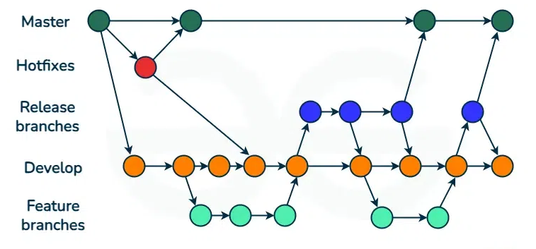
GitHub Flow¶
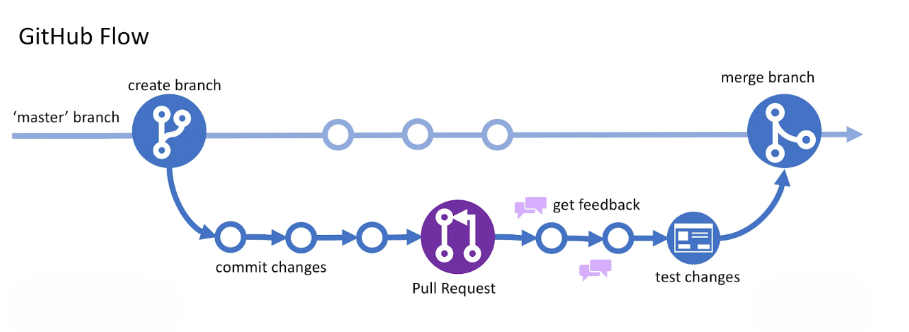
GitHub Pages¶
- GitHub Pages lets you publish a website directly from your repository. To enable it:
- Create a new repository named
your-username.github.io. - Add your website files (like index.html) to the repository.
- Push your changes to GitHub.
- Create a new repository named
- You can choose which branch and folder to publish. By default, GitHub uses main (or master) and the root folder.
- your site will be available at
https://your-username.github.io/(or your custom domain).
Git Contribute¶
Fork a Repository¶
- A fork is a copy of a repository.
Clone from GitHub¶
- A clone is a full copy of a repository to your local machine, including all logging and versions of files.
# copy repo from GitHub to new folder named "w3schools-test.github.io"
git clone https://github.com/w3schools-test/w3schools-test.github.io.git
# or -> copy repo from GitHub to a specific folder path
git clone https://github.com/w3schools-test/w3schools-test.github.io.git <path>
Configuring Remotes¶
- Let's see how the
remotesof this Git is set up after cloning by default:
git remote -v
# origin https://github.com/w3schools-test/w3schools-test.github.io.git (fetch)
# origin https://github.com/w3schools-test/w3schools-test.github.io.git (push)
# Get detailed information about a specific remote
git remote show upstream
- Rename the default
originremote :
git remote rename origin upstream
git remote -v
# upstream https://github.com/w3schools-test/w3schools-test.github.io.git (fetch)
# upstream https://github.com/w3schools-test/w3schools-test.github.io.git (push)
- Add our fork as
origin:
git remote add origin https://github.com/kaijim/w3schools-test.github.io.git
git remote -v
# origin https://github.com/kaijim/w3schools-test.github.io.git (fetch)
# origin https://github.com/kaijim/w3schools-test.github.io.git (push)
# upstream https://github.com/w3schools-test/w3schools-test.github.io.git (fetch)
# upstream https://github.com/w3schools-test/w3schools-test.github.io.git (push)
Note: According to Git naming conventions, it is recommended to name your own repository origin, and the one you forked for upstream.
- To remove a remote repository
git remote remove upstream
Send Pull Request¶
- link to the chapter : https://www.w3schools.com/git/git_remote_send_pull_request.asp?remote=github
Git Revert¶
- The
git revertcommand undoes a previous commit by creating a new commit that reverses the changes.
git revert HEAD # -> Revert the latest commit
git revert <commit> # -> Revert a specific commit
git revert HEAD~2 # -> Revert a commit further back in history
git revert --no-edit # -> Skip commit message editor
# If you get an error message saying "error: could not revert...", try using
git revert --abort # -> to abort the revert process.
# If you get an error message saying "error: could not apply...", try using
git revert --continue # -> to continue the revert process.
Git Reset¶
- The git reset command moves your current branch (HEAD) to a different commit.
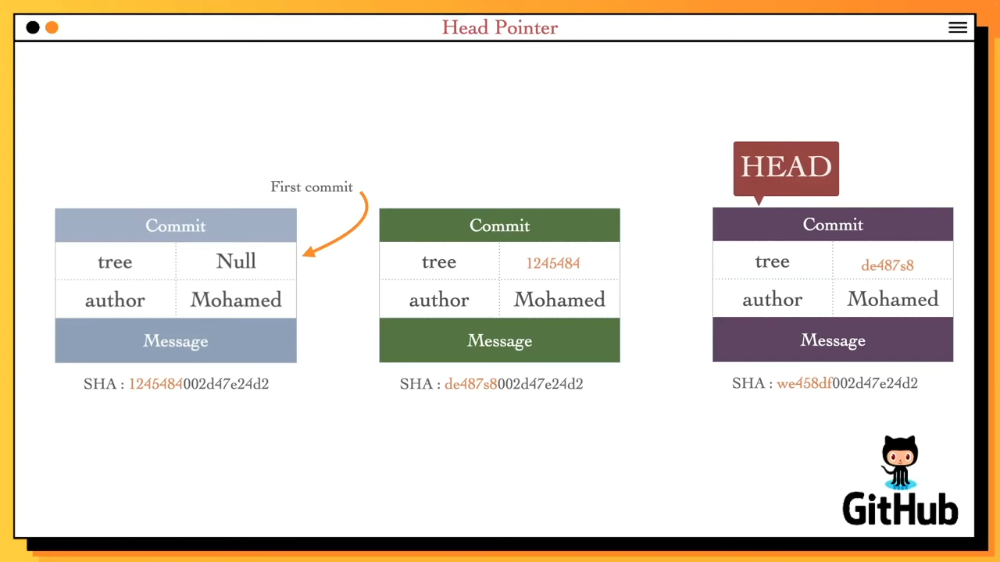
- Rules of thumb
<rev>~<n>goes backward n parents fromrev, selecting the first parent each time.- Use
<rev>^<n>to select the n-th immediate parent of merge commitrev.
G H I J
\ / \ /
D E F
\ | / \
\ | / |
\|/ |
B C
\ /
\ /
A
A = = A^0
B = A^ = A^1 = A~1
C = A^2
D = A^^ = A^1^1 = A~2
E = B^2 = A^^2
F = B^3 = A^^3
G = A^^^ = A^1^1^1 = A~3
H = D^2 = B^^2 = A^^^2 = A~2^2
I = F^ = B^3^ = A^^3^
J = F^2 = B^3^2 = A^^3^2
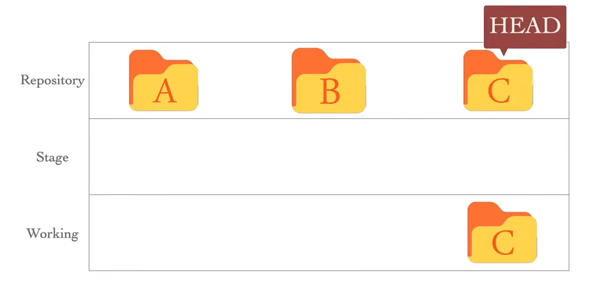
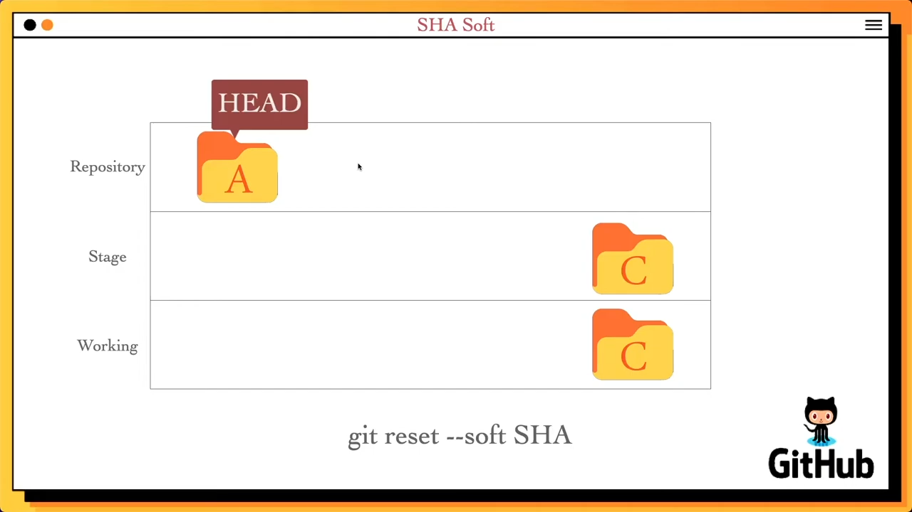
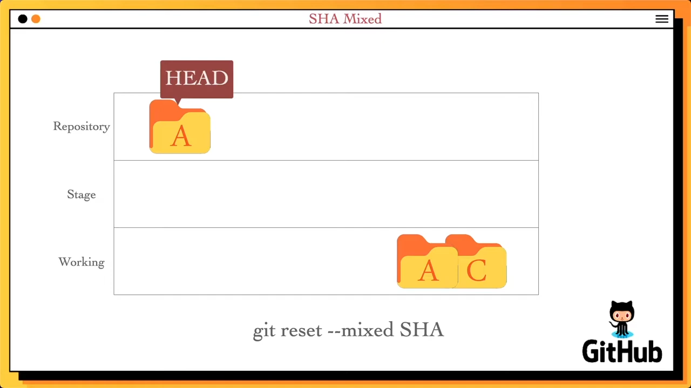
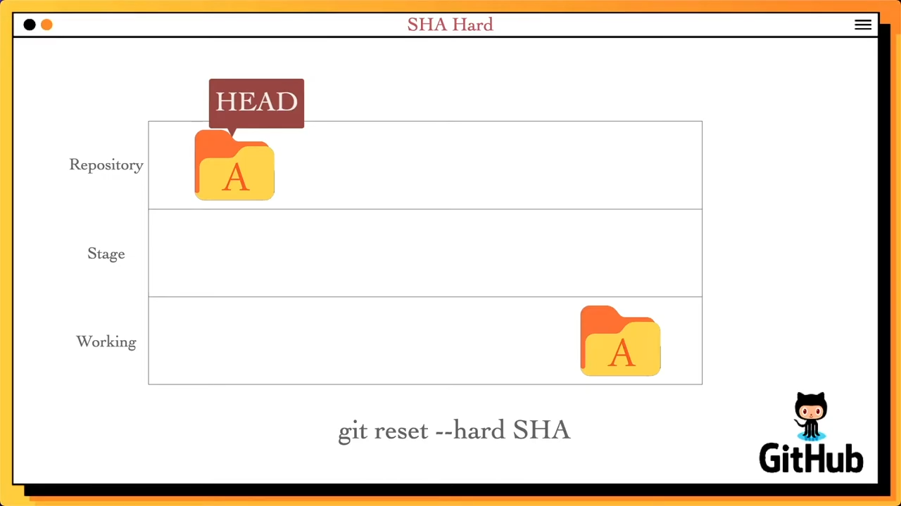
git reset --soft <commit> # -> Move HEAD to commit, keep changes staged
git reset --mixed <commit> # -> Move HEAD to commit, unstage changes (default)
git reset --hard <commit> # -> Move HEAD to commit, discard all changes
git reset <file> # -> Unstage a file
- Restore a file (or all files) to how it was in that commit and stage it, without removing later commits from history.
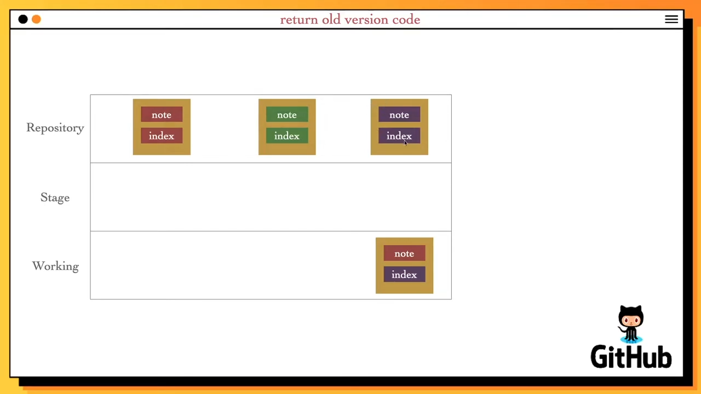
git checkout <sha1> <file>
parctical example
git checkout f2a5a3b
# do some changes
git add *
git commit -m "message"
# Head is at 4d6db
- If you checkout to the main branch, your newly committed branch may be lost unless you remember its commit hash.
- However, it is still possible to recover it using git reflog.
- Moreover, Git may garbage-collect it since it is in a detached HEAD state.
- Therefore, you need to create a new branch for the new commit to prevent this from happening.
git branch bugfix
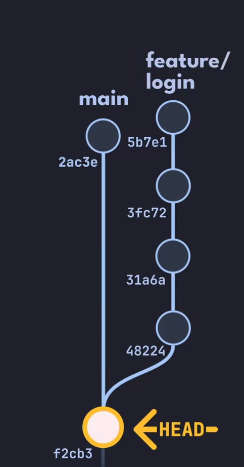
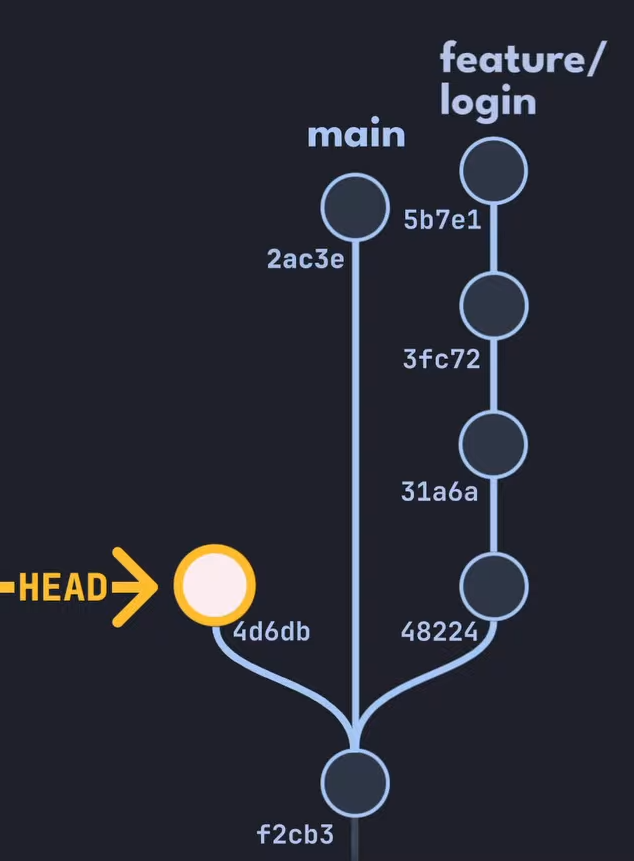
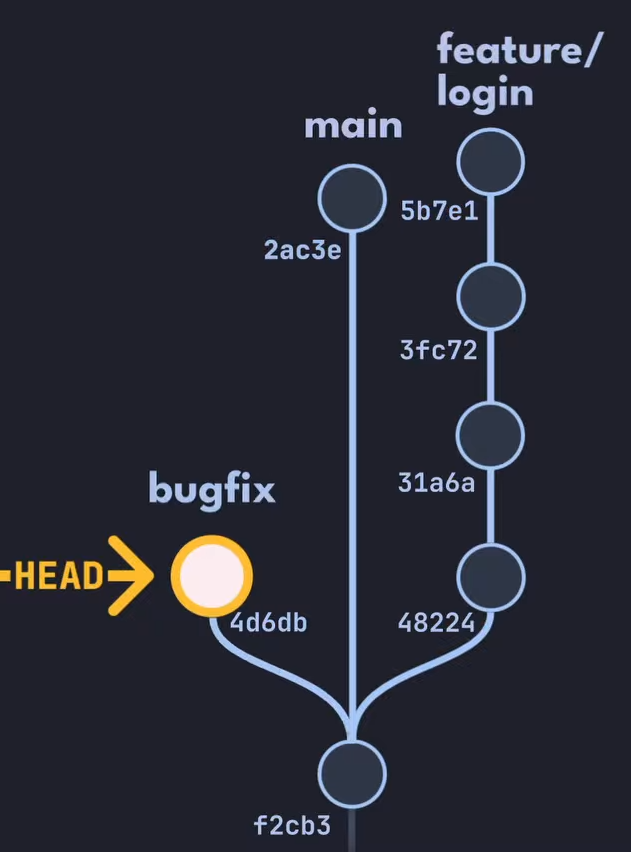
- Unstage changes (for one file or all) while keeping your edits in the working directory
git reset HEAD <file>
- Undo file edit from the working directory (based on last commit)
git checkout <file path>
Revert or Reset?¶
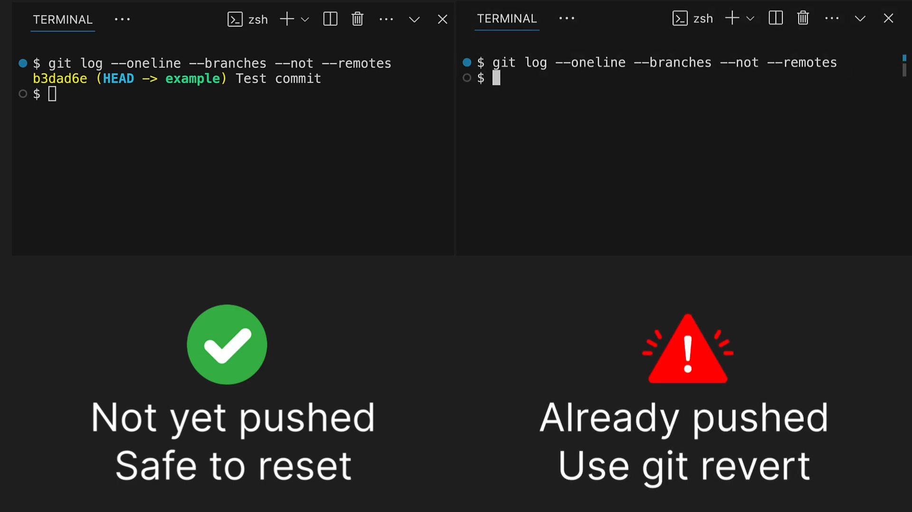
Git Rebase¶
- Rebasing moves or combines a sequence of commits to a new base commit one by one.
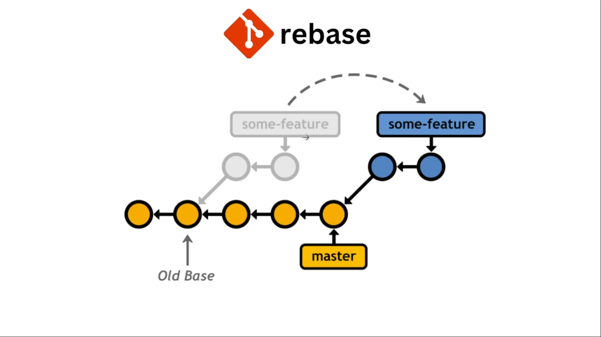
| Feature / Aspect | git merge | git rebase |
|---|---|---|
| History Modification | Doesn't modify history, only adds to it | Modifies history (destructive operation) |
| Commit Hashes | Leaves commit hashes and timestamps alone | Modifies commit hashes and timestamps* |
| History Shape | Leaves more commits in history (branchy) | Results in more linear history |
| Safety with Pushed Commits | Can safely be used on pushed commits | Never rebase pushed commits |
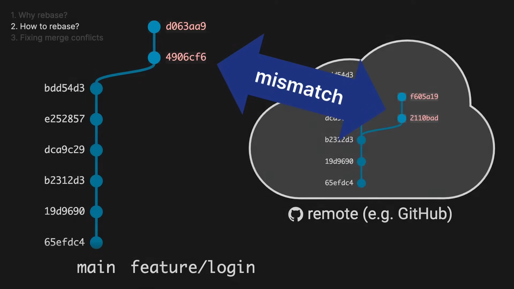
Basic Rebase¶
- To move your current branch on top of another branch.
git checkout feature-branch
git rebase main
Interactive Rebase¶
- Ways to rewrite history or (iterate over commits):
- reword – change commit message
- edit – change commit content
- squash – join multiple commits together
- split – split a commit into multiple commits (can be simulated using edit)
- reorder – reorder the commit history
- drop – delete a commit from history
- ...etc
git rebase -i HEAD~3
Continue¶
- If you hit a conflict or need to finish editing a commit, use
git rebase --continueafter resolving the issue. - This tells Git to keep going with the rebase process.
git add fixed_file.txt
git rebase --continue
Abort¶
- If something goes wrong or you want to stop the rebase, use
git rebase --abort. - This will put your branch back to how it was before you started rebasing.
git rebase --abort
Skip¶
- If you can't fix a commit during a rebase (for example, if a conflict can't be resolved), you can skip it with
git rebase --skip. - Git will leave out that commit and move on to the next one.
git rebase --skip
Git Reflog¶
git reflogrecords updates to the tip of branches and HEAD.- It is excluded from the remote.
- It is useful for :
- Recover lost commits.
- Restore a deleted branch.
- Undo a reset or a merge.
- See the history of your branch and HEAD
Show the Reflog¶
git reflog
# 1509a94 (HEAD -> main) HEAD@{0}: commit: Add the page footer
# 6afd2d6 HEAD@{1}: commit: Add the page content
# 330df8c HEAD@{2}: checkout: moving from develop to main
# 7c4f610 (develop) HEAD@{3}: commit: Add features appropiate styles
# 99f73c2 HEAD@{4}: commit: Develop new features
# 330df8c HEAD@{5}: checkout: moving from main to develop
# 330df8c HEAD@{6}: checkout: moving from 5a23a7566ad6f7068bb798c0dd2b4a5af9753f42 to main
# 5a23a75 HEAD@{7}: commit: Fix three more bugs
# b9697e7 HEAD@{8}: commit: Fix three bugs
# 3a63473 HEAD@{9}: checkout: moving from main to 3a63473
# 330df8c HEAD@{10}: commit: Add hello world in html page
# 116dc78 HEAD@{11}: commit: Add the html file
# 77813eb HEAD@{12}: commit: Add a styling file
# 4587497 HEAD@{13}: commit: say hello in script.js
# 3a63473 HEAD@{14}: commit (initial): inital commit
- you can show the reflog of a specific branch
git reflog show main
# 47f8124 (HEAD -> main, develop) main@{0}: reset: moving to HEAD@{1}
# 7c4f610 main@{1}: reset: moving to 7c4f610
# 1509a94 main@{2}: commit: Add the page footer
# 6afd2d6 main@{3}: commit: Add the page content
# 330df8c main@{4}: commit: Add hello world in html page
# 116dc78 main@{5}: commit: Add the html file
# 77813eb main@{6}: commit: Add a styling file
# 4587497 main@{7}: commit: say hello in script.js
# 3a63473 main@{8}: commit (initial): inital commit
Undo Mistakes¶
- Recover a lost branches
git checkout 3a63473
git checkout main
# Warning: you are leaving 2 commits behind, not connected to
# any of your branches:
# 5a23a75 Fix three more bugs
# b9697e7 Fix three bugs
git checkout 5a23a75 # or -> git checkout 'HEAD@{16}'
git branch Hotfix 'HEAD@{1}' # or -> git branch Hotfix 5a23a75
you can create the branch without checkout to it
git branch Hotfix 5a23a75
- Undo rebasing or merging
- Recover a lost commits
git reset --hard 7c4f610
Clean Up the Reflog¶
- The reflog is automatically cleaned by Git, but you can manually expire old entries if needed.
# This removes reflog entries older than 30 days
# for the main branch and runs garbage collection.
git reflog expire --expire=30.days refs/heads/main
git gc --prune=now
# Counting objects: 15, done.
# Compressing objects: 100% (10/10), done.
# Pruning objects
.gitignore¶
- The
.gitignorefile tells Git which files and folders to not track. - link to the chapter : https://www.w3schools.com/git/git_ignore.asp?remote=github
.gitattributes¶
- The
.gitattributesfile is a special file that tells Git how to handle specific files in your repository. - link to the chapter : https://www.w3schools.com/git/git_gitattributes.asp?remote=github
Note: All use cases are provided in the link; the one below is only an example.
Use case example¶
Creating clean release archives
- Scenario: You maintain a project on GitHub, and you want to provide a downloadable .zip or .tar.gz of the project.
- Use: Mark things like documentation, tests, or CI configs with
export-ignore. - Effect: When someone downloads the release via
git archiveor GitHub’s “Download ZIP,” the archive only includes the essential files (like source code and license).
Git LFS¶
- Git LFS (Large File Storage) is an extension for Git that helps you manage large files (like videos, images, or datasets) efficiently.
- Instead of storing big files directly in your repository, LFS stores a small pointer file in your repo and keeps the real content on a separate LFS server.
- This keeps your repository fast and small, even if you work with huge files.
- Everyone who clones the repo gets the pointer, and Git LFS fetches the real file content as needed.
link to the chapter : https://www.w3schools.com/git/git_lfs.asp?remote=github
Warnings
- Not all hosting providers support LFS. Check before using it.
- LFS storage is often limited on free plans.
Git Signing¶
- Signing a commit is like putting your personal signature on your work.
- It proves that you who made the change, and helps others trust your code.
- On platforms like GitHub or GitLab, signed commits often get a
Verifiedbadge. - Git uses GPG keys to sign commits and tags.
link to the chapter : https://www.w3schools.com/git/git_signing.asp?remote=github
Git Cherry-pick¶
- Cherry-pick lets you copy a single commit from one branch to another. It's useful when you want just one (or a few) changes, not everything from another branch.
How to Cherry-pick a Commit¶
git cherry-pick abc1234
- Edit the Commit Message
git cherry-pick abc1234 --edit
- Use -x to add a line to the commit message showing where the commit came from.
git cherry-pick abc1234 -x
- Use
--no-commit(or-n) to apply the changes, but not create a commit yet. This lets you make more changes before committing.
git cherry-pick abc1234 --no-commit
Handling Conflicts¶
- Continue after fixing a conflict
git add .
git cherry-pick --continue
- Abort Cherry-pick
git cherry-pick --abort
Patches in Git¶
- A patch is a file with changes from one or more commits. You can share a patch or apply it to another repository, even if it's unrelated to your own.
How to Create a Patch¶
# create a patch for a branch's all commits each in a separate file
git format-patch targetBranchName -o folderPath
# or create a patch for a range of commits
git format-patch -1 abc1234 -o patches
- Range of Commits
git format-patch HEAD~3
# or -> git format-patch HEAD~3..HEAD
# or -> git format-patch 7c4f610..3a63473
Note : if output folder path is not specified, it will be created in the current directory.
How to Apply a Patch¶
git apply 0001-some-change.patch
- Use
git amto apply a patch and keep the original author and messag.
git am 0001-some-change.patch
Reverse a Patch¶
- Undo the changes in a patch file.
git apply -R 0001-some-change.patch
Git CI/CD¶
- CI/CD stands for Continuous Integration and Continuous Deployment/Delivery.
- It means your code is automatically tested and deployed every time you push.
Key CI/CD Concepts¶
- Workflow: A series of jobs that run together.
- Job: A group of steps that run together.
- Step: A single task, like checking out code or running tests.
- Runner: The computer/server that runs your jobs.
- Trigger: Decides when your workflow runs.
- Environment Variables: Settings for your workflow.
- Secrets: Passwords or API keys.
# .github/workflows/ci.yml
# This file tells GitHub Actions how to run CI for your project
name: CI # The name of the workflow (shows up in GitHub)
on: [push] # Trigger: run this workflow on every push
jobs:
build: # Job name (can be anything)
runs-on: ubuntu-latest # Runner: use the latest Ubuntu server
steps:
- uses: actions/checkout@v3 # Step: check out your code from the repo
- name: Run tests # Step: give this step a name
run: npm test # Step: run your project's tests
- Badges: It visually displays whether the most recent build or test run is passed (“green/passing”) or failed (“red/failing”). It updates automatically every time you push new changes (i.e. when the CI/CD pipeline runs again).

GitHub actions and workflows¶
- GitHub actions can automate many things more than just CI/CD.
- One repository can contain many workflows.
- Actions location path:
- in your loacal repository :
.gitHub/worflows/file.yml - published in GitHub Marketplace by another developers or Microsoft :
owner/repo@tag-version
- in your loacal repository :
- GitHub Actions doesn’t check out your code automatically — you must explicitly fetch your repo (e.g. via a checkout action or git commands) before working with its files.
- It’s a good practice to assign a
nameto each step — this makes it easier to follow the execution order in the workflow logs and to spot where errors occur.
name: First Workflow
on:
push:
branches:
- main
jobs:
example-job:
runs-on: ubuntu-latest
steps:
- name: Print a welcome message
run: echo "Welcome to our first GitHub Actions Workflow!"
- name: Checkout repository
uses: actions/checkout@v4.2.2
- name: List repository files
run: ls -la
- The GitHub Marketplace hosts reusable actions published by other developers — you can incorporate them in your workflows using the
useskeyword.
on:
workflow_dispatch:
jobs:
actions-job:
runs-on: ubuntu-latest
steps:
- name: Say Hello
uses: github/actions/Greeting@v1
with: # means this action comme with parameters
name: Ahmed
env:
GITHUB_TOKEN: ${{ secrets.GITHUB_TOKEN }} # located in your repository settings
- A workflow trigger can be restricted to a specific branch or to changes in certain paths within the repository.
# .gitHub/worflows/pr-push.yml
on:
push:
branches:
- main
- 'release/**'
paths:
- 'src/**'
pull_request:
branches:
- main
- 'release/**'
jobs:
test:
runs-on: ubuntu-latest
steps:
- name: Checkout code
uses: actions/checkout@v4.2.2
- name: Run tests
run: npm test
// app.js
function greet(name) {
return `Hello, ${name}!`;
}
module.exports = greet; // Ensure function is exportable
// If run directly, print output (useful for debugging)
if (require.main === module) {
console.log(greet("World"));
}
#!/bin/bash
# src/test.sh
EXPECTED="Hello, Test!"
OUTPUT=$(node -e "console.log(require('./src/app')('Test'))")
if [ "$OUTPUT" = "$EXPECTED" ]; then
echo "✅ Test passed!"
exit 0
else
echo "❌ Test failed! Expected '$EXPECTED' but got '$OUTPUT'"
exit 1
fi
# packag.json
{
"name": "simple-node-app",
"version": "1.0.0",
"description": "A simple Node.js app for GitHub Actions PR testing",
"main": "src/app.js",
"scripts": {
"test": "bash src/test.sh"
},
"dependencies": {}
}
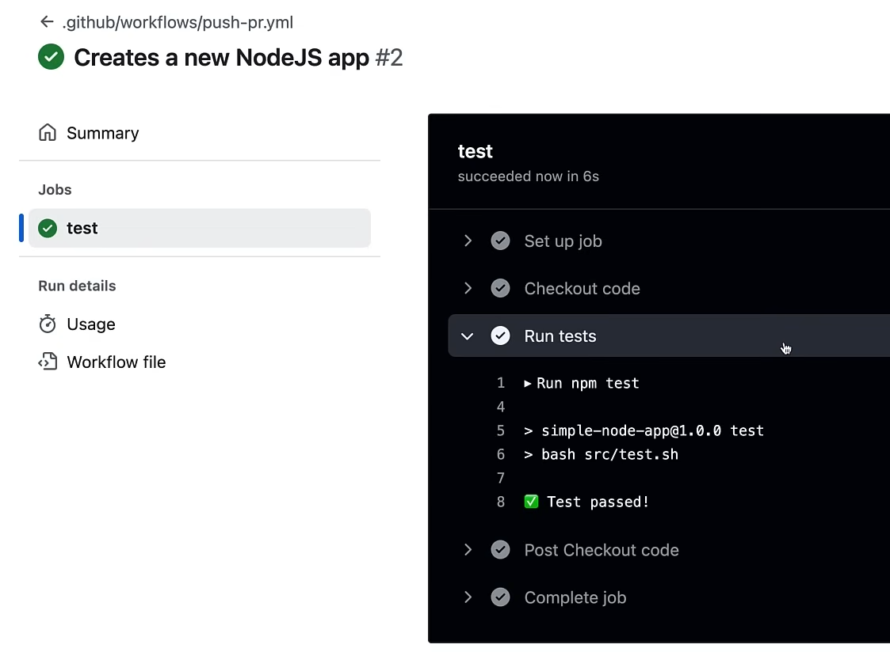
Workflow execution¶
- If you don’t define dependencies between jobs, the workflow runner will execute all jobs in parallel by default.
- If you want certain jobs to wait for others before running, you can control the execution order by using the
needskeyword. - Within a single job, however, the individual steps always execute one after another, in the order they appear.
on:
workflow_dispatch:
jobs:
job_1:
runs-on: ubuntu-latest
steps:
- name: Run job 1
run: echo "Job ${{ github.job }}" # github.job refer to current job name
job_2:
runs-on: ubuntu-latest
needs: job_1
steps:
- name: Run job 2
run: echo "Job ${{ github.job }}"
job_3:
runs-on: ubuntu-latest
needs: job_1
steps:
- name: Run job 3
run: echo "Job ${{ github.job }}"
job_4:
runs-on: ubuntu-latest
needs: [job_2, job_3]
steps:
- name: Run job 4
run: echo "Job ${{ github.job }}"
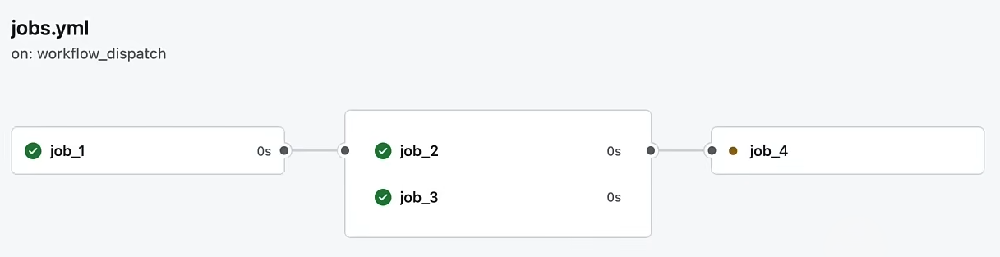
- A runner can be an OS or a docker container whether on GitHub (cloud runner) or in a self hosted runner.
- A Docker container can be used both as a runner and as a GitHub Action, allowing some workflow steps to run inside the container while others run on a virtual machine.
- If the image is in a private repository, it cannot be used as a GitHub Action in a step, but it can be used to run a job as a runner. Using
secrets, we can log in to a private Docker registry.
on:
workflow_dispatch:
jobs:
hybrid_job:
runs-on: ubuntu-latest
steps:
- name: Run a command in Ubuntu VM
run: echo "This runs on the Ubuntu VM"
- name: Run inside an Alpine container
uses: docker://alpine:3.14 # The image must be accessible without authentication
with:
entrypoint: /bin/sh
args: -c "echo 'This step runs inside an Alpine container'"
- name: Run another command in Ubuntu VM
run: echo "Back to the VM"
dockerized_job:
runs-on: ubuntu-latest
container:
image: ghcr.io/my-org/my-private-image:latest
credentials:
username: ${{ secrets.DOCKER_USERNAME }}
password: ${{ secrets.DOCKER_PASSWORD }}
steps:
- name: Show Node.js version
run: node --version
- name: Run a command inside the Node.js container
run: echo "This whole job runs inside a Node.js container"
Note:
- Alpine image does not have entrypoint so you need to specify it before running the image.
- Don’t confuse a workflow runner with the type of GitHub hosting service, such as Enterprise Cloud or Enterprise Server. For example, you can use GitHub Enterprise Cloud while running your workflow runners locally.
- Pricing depends on your account type, GitHub hosting option, and usage time. Charges apply only for cloud runners; self-hosted (on-premises) runners are free. For private repositories, fees may apply, while public repositories are completely free.
Workflow triggers¶
There are three types of triggers :
Web hooks : event trigger like push and pull-request...etc.
on:
watch: # this event is triggered when a repository is starred or unstarred
jobs:
job_1:
runs-on: ubuntu-latest
steps:
- name: Install dependencies
run: npm install
- name: Build project
run: npm run build
working-directory: ./temp
shell: bash
- name: Print environment
run: print %ENV
shell: perl {0} # use other shell than bash
Schedule : run at specific time using cron job syntax.
on:
schedule:
- cron: "0 9 * * *" # Runs every day at 09:00 UTC
jobs:
daily-task:
runs-on: ubuntu-latest
steps:
- name: Print message
run: echo "Running the scheduled task"
Manual :
- GUI.
on:
workflow_dispatch:
jobs:
deploy:
runs-on: ubuntu-latest
steps:
- name: Deploy application
run: echo "Deploying the application..."
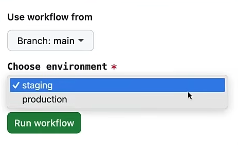
- Github cli.
on:
workflow_dispatch:
inputs:
environment:
description: "Choose environment"
required: true
default: "staging"
type: choice
options:
- staging
- production
jobs:
deploy:
runs-on: ubuntu-latest
steps:
- name: Deploy application
run: echo "Deploying the application to ${{ inputs.environment }}"
gh workflow run manual.yml
# Created workflow_dispatch event for manual.yml at main
# To see runs for this workflow, try: gh run list --workflow=manual.yml
gh workflow run manual.yml -f environment=production
# Created workflow_dispatch event for manual.yml at main
# To see runs for this workflow, try: gh run list --workflow=manual.yml
- API Call: Sends an HTTP request using
curlor any HTTP client, with the workflow execution triggered based on theevent-typespecified in the request payload.
on:
repository_dispatch:
types:
- incident_report
jobs:
handle-incident:
runs-on: ubuntu-latest
steps:
- name: Print incident details
run: echo "Incident reported"
export GITHUB_PAT= fake-PAT
curl -X POST \
> -H "Authorization: token $GITHUB_PAT" \
> -H "Accept: application/vnd.github.v3+json" \
> https://api.github.com/repos/abohmeed/ghactionscourse/dispatches \
> -d '{"event_type": "incident_report"}'
- Using a PAT personal access token is recommended for sending HTTP requests to the GitHub API to trigger a workflow.
What is an Artifact?¶
An artifact is a file or set of files generated as a result of a build process.
This can include: compiled binaries or executables, packaged libraries, deployment packages, container images (e.g. a Docker image), configuration files, metadata, documentation, etc.
Artifacts represent the “product” of translating source code (and resources) into a deployable/runnable form.
In many development practices — especially where automation is used, such as in Continuous Integration / Continuous Deployment (CI/CD) pipelines — artifacts are the outputs that get passed through testing, staging, and ultimately deployment.
- Matrix Strategy: Allows testing an artifact across multiple environments, such as Linux, Windows, and macOS. For lightweight tests, these can be executed within a workflow without requiring a real operating system or physical machine.
on:
workflow_dispatch:
jobs:
job_1:
strategy:
fail-fast: false
max-parallel: 3
matrix:
os: [ubuntu-latest, windows-latest, macos-latest]
node_version: [14.x, 15.x, 16.x]
runs-on: ${{ matrix.os }} # loop over matrix.os array
steps:
- name: Set up Node.js
uses: actions/setup-node@v3.6.0
with:
node-version: ${{ matrix.node_version }} # loop over matrix.node_version array
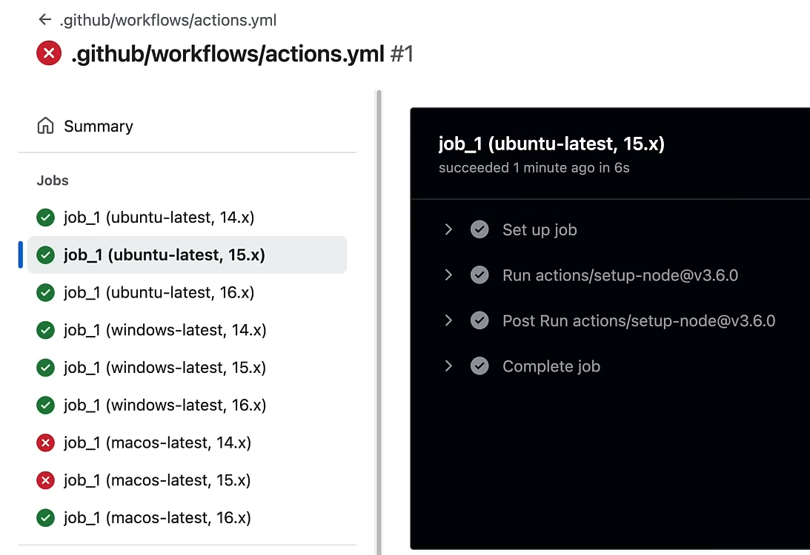
Expressions in workflows¶
on:
workflow_dispatch:
jobs:
expressions:
runs-on: ubuntu-latest
steps:
- name: Print a message
if: ${{ github.event_name == 'push' && github.ref == 'refs/heads/main' }}
# if: ${{ contains(github.event.head_commit.message, 'WIP') }}
# if: ${{ startsWith(github.ref, 'refs/tags/v') }}
run: echo "The job is running"
# Notes on other conditions:
# contains() -> checks if a string contains a substring
# startsWith() -> checks if a string starts with a substring
# endsWith() -> checks if a string ends with a substring
# always() -> runs regardless of the previous step result
# cancelled() -> runs if the previous step was cancelled
# failure() -> runs if the previous step failed
# success() -> runs if the previous step succeeded
Workflows commands¶
- workflow commands comes inside
::command::.
on:
workflow_dispatch:
jobs:
example:
runs-on: ubuntu-latest
steps:
- name: Check if a file exists
run: |
if [ -f "config.yaml" ]; then
echo "::debug::config.yaml exists"
else
echo "::error::config.yaml is missing"
fi
on:
workflow_dispatch:
jobs:
example:
runs-on: ubuntu-latest
steps:
- name: Check for deprecated functions
run: |
deprecated=true
if [ "$deprecated" = "true" ]; then
echo "::warning:: Deprecated function found"
fi
on:
workflow_dispatch:
jobs:
example:
runs-on: ubuntu-latest
steps:
- name: Set API key
run: echo "API_KEY=12345" >> $GITHUB_ENV
- name: Use API key
run: |
echo "::add-mask::$API_KEY"
echo "Using API key $API_KEY"
- The steps in a workflow are independent, each running in its own local scope. To share information from a previous step, you can pass it through environment variables, either via an environment file or the special
$GITHUB_ENVvariable.
Git Hooks¶
- Git hooks are scripts that run automatically when certain Git events happen locally or on a remote repository.
- Hooks are stored in
.git/hooksinside your repository. - Git Hooks don't get pushed to GitHub, and they are not version-controlled (unless you have extra setup to distribute them).
- By default, you'll see sample scripts ending with
.sample. To enable a hook, remove the.sampleextension and make the script executable. - Hooks can be written in any scripting language (shell, Python, etc.), as long as the script is executable.
mv .git/hooks/pre-commit.sample .git/hooks/pre-commit
chmod +x .git/hooks/pre-commit
Types of Hooks¶
- Some common predefined hooks are:
- pre-commit: runs before you make a commit.
- commit-msg: checks or edits the commit message.
- pre-push: runs before you push code to a remote.
- pre-receive: run on the Git server, not your computer. These can enforce rules for everyone who pushes to the repository.
- You can have custom hooks
!jupyter nbconvert --to html Git_Explanation.ipynb
!jupyter nbconvert --to markdown Git_Explanation.ipynb